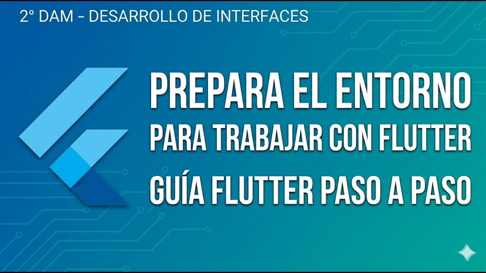
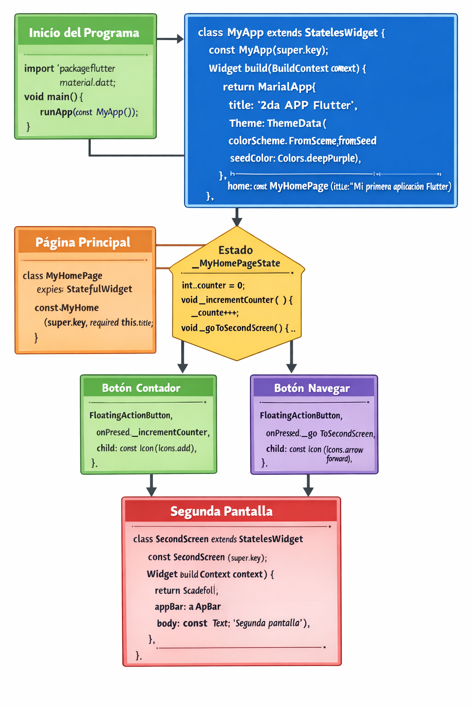
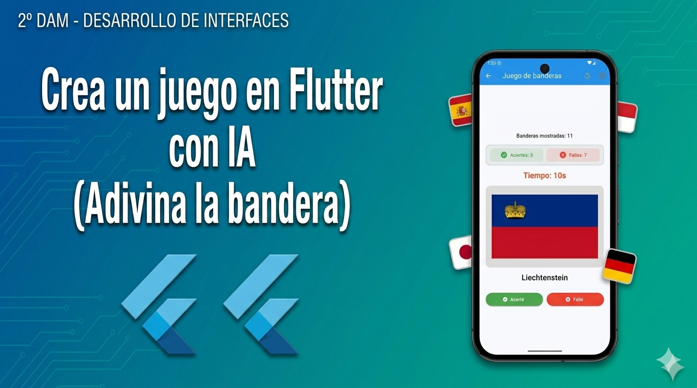

¿Qué es Flutter?
🚀 ¿Qué es Flutter?
Flutter es un SDK (Software Development Kit) de código abierto. No es solo un lenguaje o una librería, sino un "kit de construcción" completo que incluye todo lo necesario (motor de renderizado, componentes de interfaz de usuario, herramientas de prueba, etc.) para crear aplicaciones de alta calidad.
🛠️ ¿Para qué sirve?
Su gran superpoder es el desarrollo multiplataforma con un único código base. Con Flutter escribes el código una sola vez y puedes desplegarlo en:
- 📱 Móvil: Android e iOS.
- 🌐 Web: Aplicaciones para navegadores (PWA).
- 🖥️ Escritorio: Windows, macOS y Linux.
- ⚙️ Dispositivos embebidos: Pantallas de coches, neveras inteligentes, etc.
🏢 ¿Quién lo inventó?
Fue creado por Google. Se lanzó oficialmente en 2017 y desde entonces han puesto muchísimos recursos para que se convierta en el estándar del desarrollo moderno. Empresas como Alibaba, BMW y la propia Google (en Google Pay) lo usan a diario.
💡 Los 3 pilares que debes conocer hoy:
Dart
Es el lenguaje de programación que usa Flutter. Es fácil de aprender si vienes de Java, C# o JavaScript.
Widgets
En Flutter, "Todo es un Widget". Un botón es un widget, un color es un widget y hasta la alineación de un texto es un widget. Son como piezas de LEGO.
Hot Reload
Es la "magia" de Flutter. Puedes cambiar el código y ver el resultado en tu móvil o simulador de forma casi instantánea sin perder el estado de la aplicación.
💡 Dato curioso: A diferencia de otros frameworks que usan componentes nativos del sistema, Flutter dibuja cada píxel en la pantalla usando su propio motor (Skia/Impeller), lo que garantiza que tu app se vea igual en un Android de hace 5 años que en el último iPhone.
Paso 1. Flutter - Preparación del entorno
En este vídeo se muestra como preparar nuestro entorno de programación en local para desarrollar aplicaciones en Flutter. Puedes ponerme a 2x :)

Paso 2.Segunda App en Flutter con navegación
Código fuente del ejemplo
test02.zip

Infografía 2da App en Flutter
Ver info
Paso 3.Solicita Github Copilot para Estudiantes (Manual)
Paso 4. Desarrolla una App en Flutter completamente con IA
